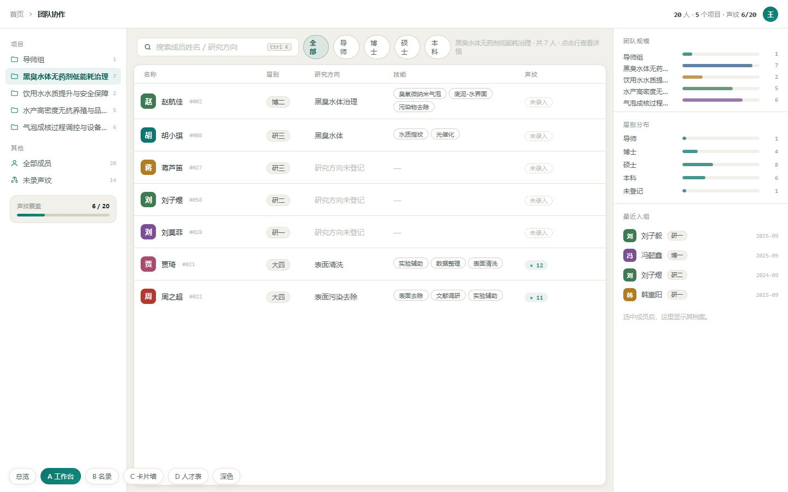
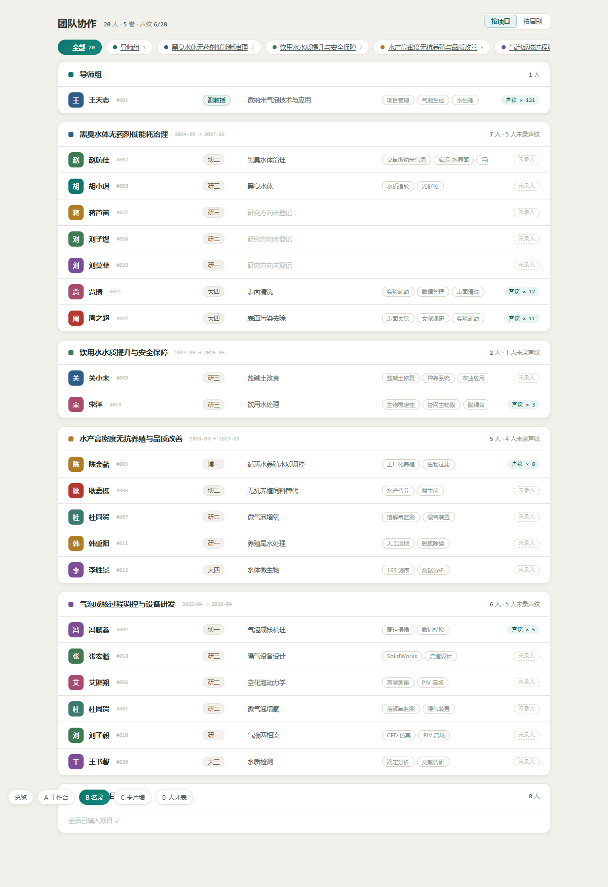
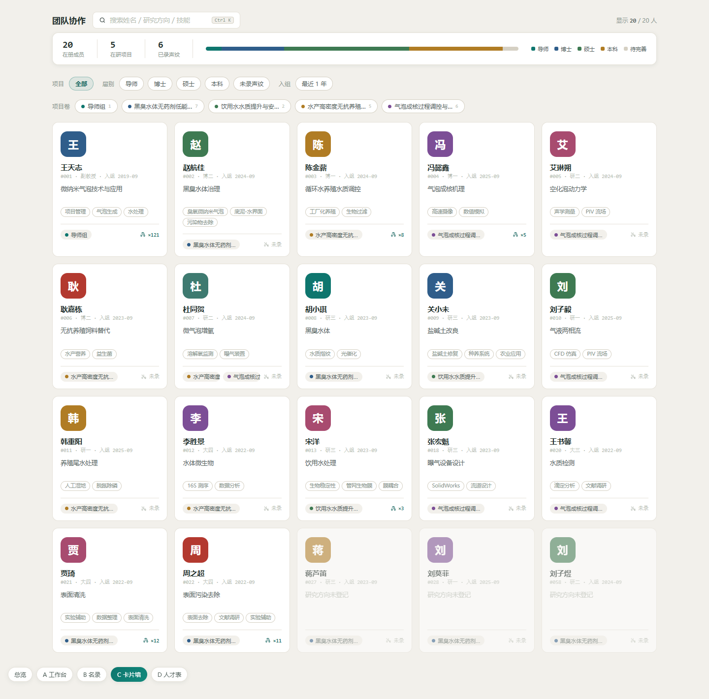
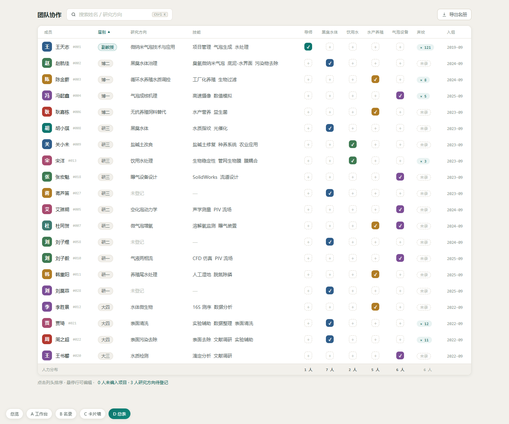

目标：告别「档案卷宗」的复古装饰语言（粗黑描边、硬阴影、衬线字、印章贴纸），改用课题组网盘三栏工作台的干净设计体系 —— 暖纸底 #F2F0EB / 白卡细描边 / 深青 #0E766E 主行动 / 灰阶文字层级 / 大圆角小徽章。四版均为静态稿，含深色变量，数据取当前生产快照。

与网盘完全同构：左栏项目导航（选中高亮 + 人数徽标 + 声纹覆盖进度卡），中栏成员表格（搜索 + 筛选 chips + 悬停出操作），右栏成员档案（未选人时显示团队规模/届别/最近入组概览）。

保留现版「项目为纲、成员挂卷」的信息架构与顶部项目锚导，但整套皮肤换成网盘语言：白卡细边、单行 52px 紧凑成员行、灰阶层级、去描边去印章。顶部一行统计代替黑底总账条。

网盘的搜索/筛选/chips/统计条语言搬到「人」上：成员 = 一张卡（头像 + 方向 + 技能 + 项目色点 + 声纹状态），顶部群像统计条 + 项目/届别双行筛选。适合把团队当「人才图谱」浏览。

一张全量可排序总表：成员 × 项目矩阵（✓ 格 + 悬停可「编入」），列为网盘式细表头，点击列头排序（届别/声纹/入组），表尾人力分布合计行。缺登记信息的人在页脚一条提示点齐。